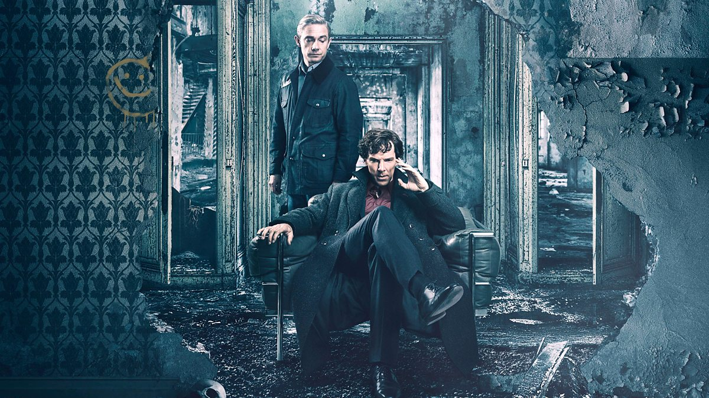
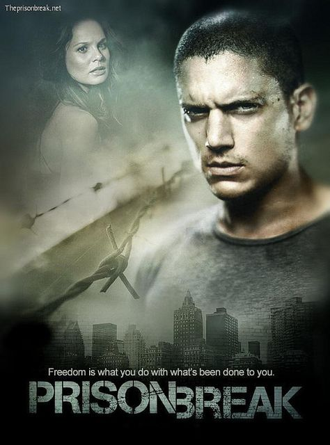
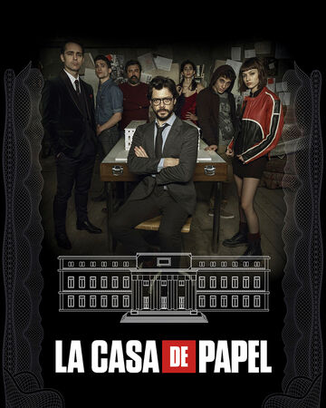

| Name |
Description |
Trailer |
| Dark |
I might be biased, but I really feel like Dark is the best series ever made. It is the first German Netflix Special and it tells the story of the mysterious disappearance of a young boy in the town of Winden, or at least that’s where it starts. It is essentially about the concepts of free will, time-space and how the past, present and future are all interconnected. It is grim, psychological and a slow burn for sure, but there really aren’t enough adjectives to describe the masterpiece that Dark is, you really need to watch it for yourself. |
 |
| Sherlock |
Arguably the best British television series of all time. Sherlock depicts "consulting detective" Sherlock Holmes solving various mysteries in modern-day London. Holmes is assisted by his flatmate and friend, Dr. John Watson, who has returned from military service in Afghanistan with the Royal Army Medical Corps. Although Metropolitan Police Service Detective Inspector Greg Lestrade and others are suspicious of Holmes at first, over time, his exceptional intellect and bold powers of observation persuade them of his value. In part through Watson's blog documenting their adventures, Holmes becomes a reluctant celebrity with the press reporting on his cases and eccentric personal life. But I'm sure there is no need to explain it to any British person. |
 |
| Prison Break |
Prison Break is, well…about a prison break. After discovering that his brother has been sentenced to the death penalty for a crime that he did not commit, Michael Schofield designs a plan to break into and out of the prison that his brother is being held in. One big detail is that Michael is one of the engineers who helped design the prison that his brother is at, which makes it an easier task to fulfil, even if it sounds crazy. This crime drama is sure to keep you on the edge of your seat as well as feel as invested as you’ve ever been in a series. |
 |
| Mr. Robot |
|
|
| Money Heist |
Money Heist is a Spanish heist crime drama series that traces two long-prepared heists engineered by El Professor. The Professor brings together some of the best criminals and explains the plans to all of them, as well as executing them with their help. But as it is standard for Spanish shows, the perfect strategic crime is offset by the emotional dynamics of the characters. It is as much about the art of stealing as it is about relationships and about criticising the oppressing forces that rule the world. |
 |